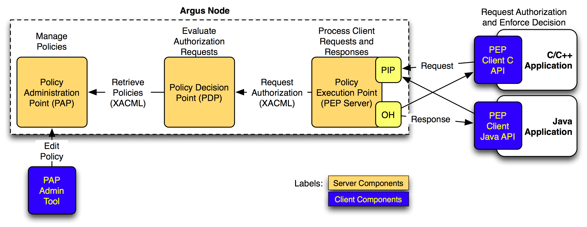

Argus Authorization Service
The Argus Authorization Service renders consistent authorization
decisions for distributed services (e.g., user interfaces,
portals, computing elements, storage elements). The service is
based on the XACML standard, and uses authorization policies to
determine if a user is allowed or denied to perform a certain
action on a particular service.

Argus is composed of three main components:
- The Policy Administration Point (PAP) provides the tools to
author authorization policies, organize them in the local
repository and configure policy distribution among remote PAPs.
- The Policy Decision Point (PDP) implements the authorization
engine, and is responsible for the evaluation of the authorization
requests against the XACML policies retrieved from the PAP.
- The Policy Enforcement Point Server (PEP Server) ensures the
integrity and consistency of the authorization requests received
from the PEP clients. Lightweight PEP client libraries are also
provided to ease the integration and interoperability with other
EMI services or components.
Documentation
The general Argus documenation is available.
Argus Components
Servers
Client Libraries